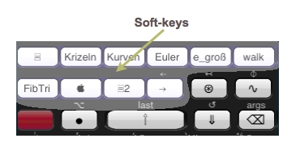
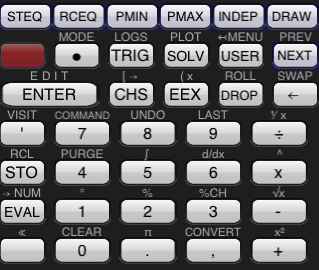
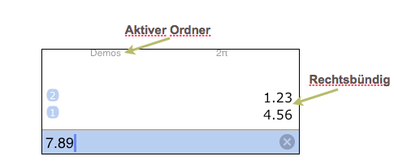
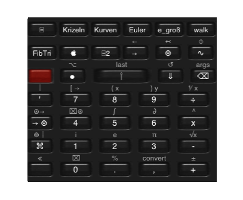

Hallo. Ich bin ND0.
Ich würde Ihnen gerne zeigen, was ich kann.
Bitte tappen Sie jede der Soft-keys, um sich meine Demo anzusehen. 
Wenn Sie nach der Demo gerne diese Tastenbelegung hätten 
oder den Stack auf der rechten Seite sehen würden, 
wechseln Sie bitte zur 'Einstellungen' App, finden dort ND0, and ändern Konfiguration zu "Klassisch" oder Stack zu "Rechts-bündig".
Wenn Sie wollen, dass die Tasten so aussehen 
tappen Sie Definition und ändern meine Haut zu 'Dunkel'.
Die Demos zeigen koole Dinge. Ich wurde gebeten, Ihnen auch mitzuteilen, dass ich "es liebe ein Arbeitspferd für tag-tägliche Berechnungen, wie das Addieren und Dividieren von Zahlen (noch nicht einmal komplexe), zu sein."
Da ich ein bisschen anders bin als andere, machen Sie bitte die "Quick Tour" auf http://naivedesign.com/ND0, oder Sie werden aus mir vermutlich kein vernünftiges Verhalten herausbekommen.
Sie werden Dinge wie das Wechseln von Ordern, Menüs, das Benutzen von Variablen, Erstellen von Screenshots, Emailen des Stacks, das Tastengrössermachen, etc. erlernen, und auch... wie man mit mir ohne Gleich-Taste Zahlen addiert.
Wenn Sie einen unbegrenzten Stack brauchen, ziehen Sie bitte den Kauf von ND1 in Erwägung.
(Doppel-Tappen oder ◉ tappen)